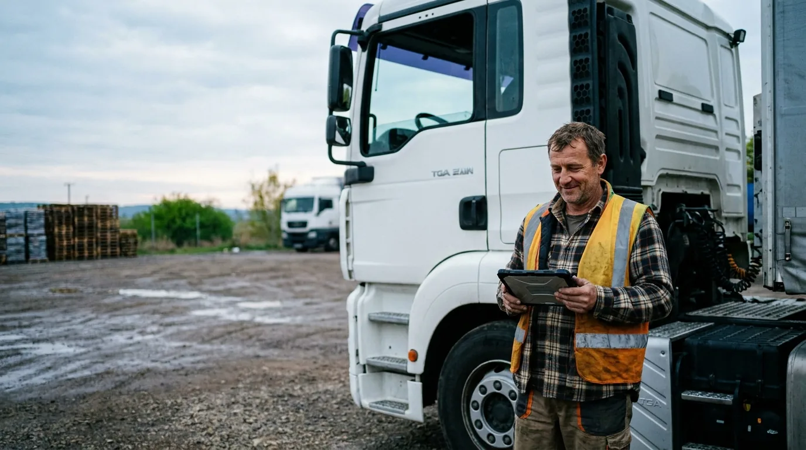
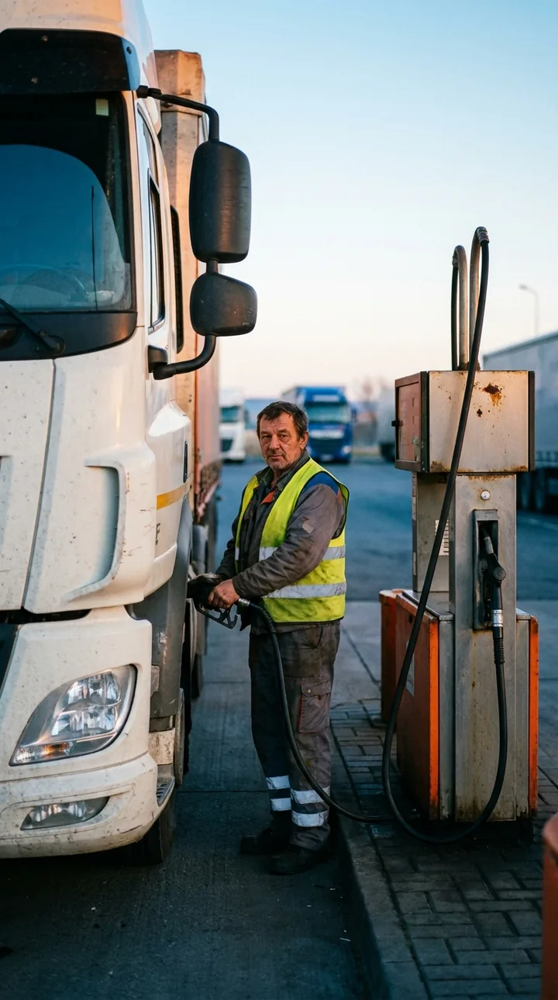
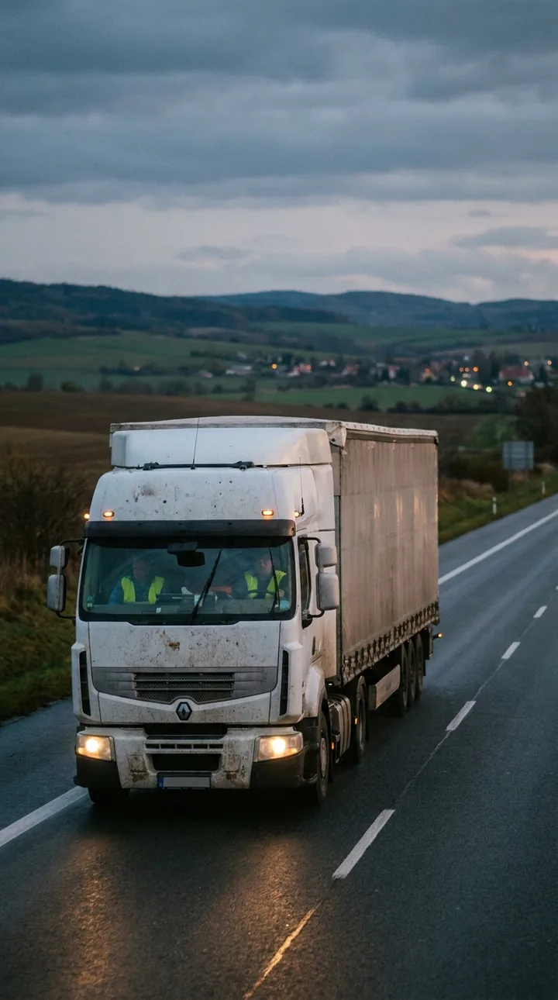
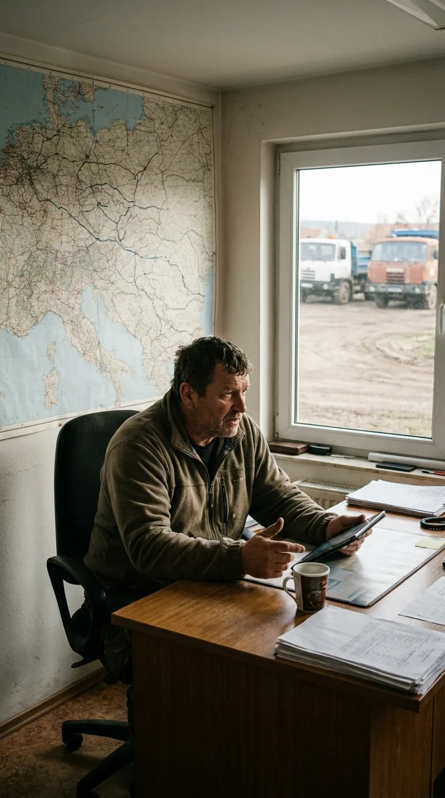
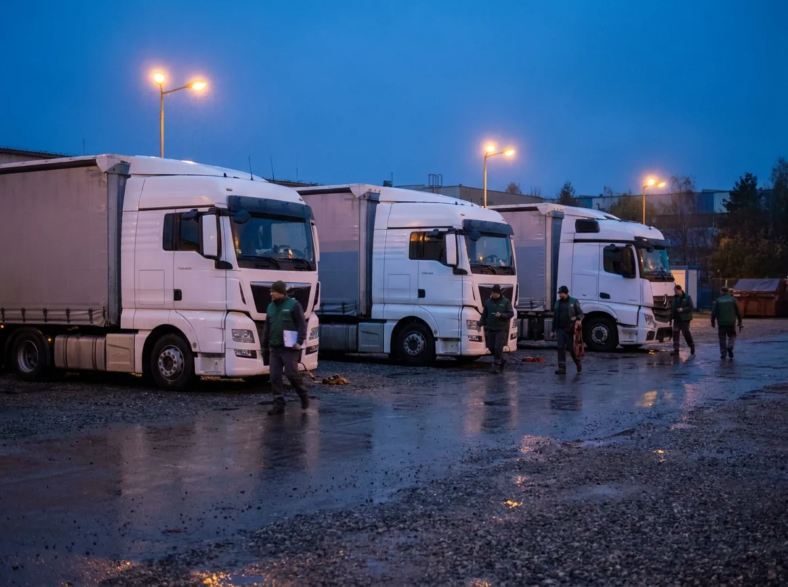

Peníze z tahače.Kamiony jedou dál.
Tahač, návěs nebo nákladní vůz od vás dočasně vykoupíme a výkupní cenu pošleme na účet. Vozidlo dál jezdí na vaše zakázky — a až odběratelé zaplatí, odkoupíte ho zpět za cenu, kterou znáte předem.
Nezávazná žádost zdarma · pro autodopravce a spedice s IČO · technik přijede do depa · Raději zavolat? 800 123 456

Pozor! Tato služba není zdarma — za rezervaci možnosti zpětného odkupu platíte měsíční poplatek.
Orientačně: výkup 65 % a poplatek 3,5 % z odhadní hodnoty vozidla · vše v Kč před podpisem
Nafta a mýto hned. Faktura za 60 až 90 dní.
Dopravce platí náklady jízdy v den, kdy vyjede. Spedice a velcí odběratelé platí za dva až tři měsíce — a někdy později. Mezitím stojí statisíce v tahači, který jezdí. TechCash tenhle kapitál uvolní, aniž by kamion opustil flotilu.
Nafta, AdBlue, mýto, diety řidiče — vše hned nebo do týdne.
Po doručení a potvrzení CMR. Splatnost 60–90 dní je v branži běžná.
Výplaty řidičů, pneumatiky, opravy a pojištění nečekají na odběratele.
Faktura zaplacena — ideální okamžik pro zpětný odkup vozidla.
Zvýrazněné body: kdy dopravci TechCash využívají nejčastěji. Dobu rezervace nastavíte podle splatnosti svých faktur (1–12 měsíců).
Náklady jízdy hned, faktura za tři měsíce

Tankovací karta nečeká na odběratele
Peníze z dočasného výkupu tahače pokryjí palivo, mýto a diety — kamion jede dál na vaše zakázky.

Vozidlo dál jezdí, i mezinárodně
Zůstáváte provozovatelem v technickém průkazu. Technik přijede do depa mezi dvěma jízdami, plán jízd se nemění.

Odkup, až odběratel zaplatí
Dobu rezervace nastavíte podle splatnosti faktur (60–90 dní). Tři čísla v Kč vidíte hned, dřívější odkup je bez penalizace.
Provozní kapitál pro flotilu
Nafta a AdBlue
Tankovací karty a zálohy na palivo pro celou flotilu — největší měsíční výdaj dopravce.
typicky 150 000 – 600 000 Kč / měsícMýto a dálniční poplatky
Elektronické mýto v ČR i v zahraničí se strhává průběžně a nečeká na splatnost faktur.
typicky 40 000 – 200 000 Kč / měsícPneumatiky a servis
Sada pneumatik na tahač s návěsem, brzdy, tachograf, STK — bez toho vozidlo nevyjede.
typicky 60 000 – 250 000 KčMzdy řidičů a diety
Řidiči dostanou výplatu na konci měsíce. Odběratel zaplatí za tři. Ten rozdíl nese dopravce.
typicky 100 000 – 500 000 Kč / měsícPojištění a povinné platby
Pojištění flotily, silniční daň, licence a poplatky se platí předem a v celku.
typicky 50 000 – 300 000 KčZáloha na nový kontrakt
Nový odběratel chce první jízdy hned — a zaplatí, až se rozjede pravidelná spolupráce.
podle objemu kontraktuOrientační rozpětí z praxe (demo). Peníze z výkupu použijete pro své podnikání podle vlastního uvážení — účel na výkupní cenu nemá vliv.
Od dodávky po tahač s návěsem
Vozidla s dohledatelnou historií, servisní knihou a doklady. Stáří obvykle do 12 let, stav posoudí technik přímo v depu.
Tři kroky. Vozidlo nevypadne z plánu jízd.
Zjistíte svá tři čísla
Zadáte IČO, typ vozidla, rok výroby a nájezd. Hned vidíte výkupní cenu, měsíční rezervační poplatek i cenu zpětného odkupu — v Kč.
Technik přijede do depa
Zkontroluje tachograf, servisní historii, pneumatiky, brzdy, nástavbu a doklady. Prohlídku naplánujeme mezi jízdy.
Podpis a peníze na účet
Kupní smlouva, předávací protokol a smlouva o užívání. Zůstáváte provozovatelem v technickém průkazu; převod pojištění zařídíme.
Co technik kontroluje
- Nájezd a servisní historietachograf, servisní kniha, poslední velký servis, výměny
- Technický stavmotor, převodovka, brzdy, pneumatiky, nástavba či agregát, platná STK
- Dokladyvelký technický průkaz, doklad o pořízení, oprávnění jednat za firmu
- Zatížení vozidlastávající leasing či úvěr na vozidlo — posuzujeme individuálně

Pozor! Tato služba není zdarma — za rezervaci možnosti zpětného odkupu platíte měsíční poplatek.
Co se ptají dopravci, než se ozvou
Časté dotazy dopravců
Čtení na pauzu mezi jízdami
Zjistěte, kolik za váš tahač nabídneme.
Nezávazně, za 2 minuty, s technikem u vás v depu. Pro dopravce a firmy s IČO — spotřebitelům službu neposkytujeme.